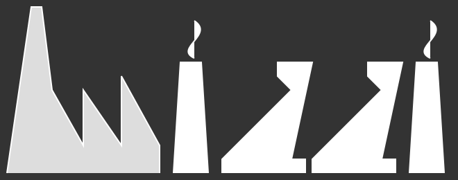

<!doctype html>
<html VERSION-5="5" VERSION-4="4" version="5">
<head>
    <link href="https://fonts.googleapis.com/css?family=Roboto" rel="stylesheet" />
    <link href="sanitize.css" rel="stylesheet" />
    <link href="../styles/main.css" rel="stylesheet" />
    <link href="../styles/documentation-artifacts.css" rel="stylesheet" />
</head>
<body class="Documentation-artifacts">
    <!-- top navigation markup -->
    <input type="checkbox" id="tn-input-toggle" />
    <nav class="tn-bar">
        <nav class="tn-main">
            <a href="index.html.ittf"><div class="logo">
                
            </div>
            </a>
            <label for="tn-input-toggle" class="tn-label-toggle"></label>
            <label for="tn-input-toggle" class="tn-label-toggle-close">&times;</label>
            <ul>
                <li><a href="../concepts.html">Concepts</a>
                </li>
                <li class="tn-pageSelected"><a href="../docs/intro.html">Documentation</a>
                <nav class="tn-subPages_mobile">
                    <ul>
                        <li><a href="../docs/intro.html">intro</a>
                        </li>
                        <li><a href="../docs/ittf.html">ittf</a>
                        </li>
                        <li><a href="../docs/jswizzi.html">jswizzi</a>
                        </li>
                        <li><a href="../docs/models.html">models</a>
                        </li>
                        <li><a href="../docs/artifacts.html">artifacts</a>
                        </li>
                        <li><a href="../docs/jobs.html">jobs</a>
                        </li>
                        <li><a href="../docs/plugins.html">plugins</a>
                        </li>
                    </ul>
                </nav>
                </li>
                <li><a href="../api.html">Api</a>
                </li>
                <li><a href="../code/intro.html">Code</a>
                </li>
                <li><a href="../starters.html">Starters</a>
                </li>
                <li><a href="../project.html">Project</a>
                </li>
            </ul>
        </nav>
        <nav class="tn-subPages">
            <ul>
                <li><a href="../docs/intro.html">intro</a>
                </li>
                <li><a href="../docs/ittf.html">ittf</a>
                </li>
                <li><a href="../docs/jswizzi.html">jswizzi</a>
                </li>
                <li><a href="../docs/models.html">models</a>
                </li>
                <li class="tn-subPageSelected"><a href="../docs/artifacts.html">artifacts</a>
                </li>
                <li><a href="../docs/jobs.html">jobs</a>
                </li>
                <li><a href="../docs/plugins.html">plugins</a>
                </li>
            </ul>
        </nav>
    </nav>
    <!-- main content markup -->
    <main id="mc-wrapper" class="mc-wrapper-layout-sub">
        <input type="checkbox" id="mc-toggle-toc" />
        <input type="checkbox" id="mc-toggle-toc-close" onchange="mc_toggle_toc_Close()" />
        <div class="mc-frame">
            <div class="mc-frame-bar">
                <h1 class="mc-sidebar-left-title">artifacts</h1>
                <h1>
                    <label for="mc-toggle-toc-close" class="mc-label-toggle-close">&times;</label>
                </h1>
            </div>
            <nav class="mc-sidebar-left">
                <ul>
                    <li><a href="#concept-intro" class="mc-item-link">Introduction</a>
                    <label for="mc-toggle-concept-intro" class="mc-label-toggle">Introduction</label>
                    </li>
                    <li><a href="#concept-1" class="mc-item-link">Artifact generators</a>
                    <label for="mc-toggle-concept-1" class="mc-label-toggle">&nbsp; Artifact generators</label>
                    </li>
                    <li><a href="#concept-2" class="mc-item-link">Generation implementation</a>
                    <label for="mc-toggle-concept-2" class="mc-label-toggle">&nbsp; Generation implementation</label>
                    </li>
                    <li><a href="#concept-3" class="mc-item-link">The gencontext object</a>
                    <label for="mc-toggle-concept-3" class="mc-label-toggle">&nbsp; The gencontext object</label>
                    </li>
                    <li><a href="#concept-4" class="mc-item-link">Sample artifact generators</a>
                    <label for="mc-toggle-concept-4" class="mc-label-toggle">&nbsp; Sample artifact generators</label>
                    </li>
                    <li><a href="#concept-5" class="mc-item-link">Wizzi core artifacts</a>
                    <label for="mc-toggle-concept-5" class="mc-label-toggle">&nbsp; Wizzi core artifacts</label>
                    </li>
                    <li><a href="#concept-6" class="mc-item-link">json/export core artifact</a>
                    <label for="mc-toggle-concept-6" class="mc-label-toggle">&nbsp; json/export core artifact</label>
                    </li>
                    <li><a href="#concept-7" class="mc-item-link">xml/export core artifact</a>
                    <label for="mc-toggle-concept-7" class="mc-label-toggle">&nbsp; xml/export core artifact</label>
                    </li>
                    <li><a href="#concept-8" class="mc-item-link">ittf/document core artifact</a>
                    <label for="mc-toggle-concept-8" class="mc-label-toggle">&nbsp; ittf/document core artifact</label>
                    </li>
                </ul>
            </nav>
            <div class="mc-content">
                <div>
                    <input type="checkbox" id="mc-toggle-concept-intro" onchange="m_toggleChanged()" />
                    <input type="checkbox" id="mc-toggle-concept-1" onchange="m_toggleChanged()" />
                    <input type="checkbox" id="mc-toggle-concept-2" onchange="m_toggleChanged()" />
                    <input type="checkbox" id="mc-toggle-concept-3" onchange="m_toggleChanged()" />
                    <input type="checkbox" id="mc-toggle-concept-4" onchange="m_toggleChanged()" />
                    <input type="checkbox" id="mc-toggle-concept-5" onchange="m_toggleChanged()" />
                    <input type="checkbox" id="mc-toggle-concept-6" onchange="m_toggleChanged()" />
                    <input type="checkbox" id="mc-toggle-concept-7" onchange="m_toggleChanged()" />
                    <input type="checkbox" id="mc-toggle-concept-8" onchange="m_toggleChanged()" />
                    <h1 class="mc-content-title" id="concept-intro">artifacts</h1>
                    <div class="mc-pane mc-pane-concept-intro">
                        <div class="summary"></div>
                    </div>
                    <div class="mc-pane mc-pane-concept-1">
                        <h2 id="concept-1">Artifact generators</h2>
                        <div class="summary">
                            <p>Artifact generators are contained in wizzi plugins and are exposed to the wizzi factory implementing the wizzi-plugin.factoryPlugin API.</p><p>The wizzi-plugin.factoryPlugin.getArtifactGenerator(artifactKey) method returns a wizzi-plugin.artifactGenerator interface for generating the requested `artifactName`.</p><h4>wizzi-plugin.artifactGenerator API</h4><pre class="prettyprint"><ol class="linenums"><li class="L1"><span class="pnl"></span><span class="pp-tag">{</span><span class="pp-pln"> </span></li><li class="L2"><span class="pnl">  </span><span class="pp-tag">func</span><span class="pp-pln"> gen</span></li><li class="L3"><span class="pnl">    </span><span class="pp-tag">{</span><span</span><span class="pp-pln"> model</span></li><li class="L4"><span class="pnl">      </span><span class="pp-tag">|</span><span class="pp-pln"> api-ref wizzi-plugin.wizziModel</span></li><li class="L5"><span class="pnl">      </span><span class="pp-tag">|</span><span class="pp-pln"> POJO</span></li><li class="L6"><span class="pnl">    </span><span class="pp-tag">{</span><span</span><span</span><span class="pp-pln"> ctx</span></li><li class="L7"><span class="pnl">      </span><span class="pp-tag">api-ref</span><span class="pp-pln"> wizzi.artifact.genContext</span></li><li class="L8"><span class="pnl">    </span><span class="pp-tag">callback</span><span class="pp-pln"> </span></li></ol></pre><p>Plugins authors are free to implement this interface with their preferred tools.</p><p>In this documentation section we describe solutions that the wizzi factory has taken for its own artifact generators.</p><h4>Wizzi factory standard artifact generators location</h4><p>Artifact generators should have a standard location in the plugin package.</p><pre class="prettyprint"><ol class="linenums"><li class="L1"><span class="pnl"></span><span class="pp-tag">...</span><span class="pp-pln"> </span></li><li class="L2"><span class="pnl">  </span><span class="pp-tag">`package-name`</span><span class="pp-pln"> </span></li><li class="L3"><span class="pnl">    </span><span class="pp-tag">lib</span><span class="pp-pln"> </span></li><li class="L4"><span class="pnl">      </span><span class="pp-tag">artifacts</span><span class="pp-pln"> </span></li><li class="L5"><span class="pnl">        </span><span class="pp-tag">`wfschema-name`</span><span class="pp-pln"> </span></li><li class="L6"><span class="pnl">          </span><span class="pp-tag">`artifact-name`</span><span class="pp-pln"> </span></li><li class="L7"><span class="pnl">            </span><span class="pp-tag">gen</span><span class="pp-pln"> </span></li><li class="L8"><span class="pnl">              </span><span class="pp-tag">main.js</span><span class="pp-pln"> </span></li></ol></pre><p>The file 'main.js' is the module that exposes the wizzi-plugin.artifactGenerator interface for the artifact of key: `wfschema-name`/`artifact-name`.</p><p>This artifact key must be unique in the plugins configuration of the wizzi.wizziFactory instance that is executing the generation.</p><h4>Example of 'generator' attribute in a 'wfjob'</h4><p>The `wfschema-name`/`artifact-name` artifact key is the value to be declared in the generator attribute of the artifact element of a 'wfjob' ittf document.</p><pre class="prettyprint"><ol class="linenums"><li class="L1"><span class="pnl"></span><span class="pp-tag">wfjob</span><span class="pp-pln"> job-name</span></li><li class="L2"><span class="pnl">  </span><span class="pp-tag">...</span><span class="pp-pln"> </span></li><li class="L3"><span class="pnl">  </span><span class="pp-tag">line</span><span class="pp-pln"> line-name</span></li><li class="L4"><span class="pnl">    </span><span class="pp-tag">artifact</span><span class="pp-pln"> `artifact-generation-description`</span></li><li class="L5"><span class="pnl">      </span><span class="pp-tag">...</span><span class="pp-pln"> </span></li><li class="L6"><span class="pnl">      </span><span class="pp-tag">generator</span><span class="pp-pln"> `wfschema-name`/`artifact-name`</span></li><li class="L7"><span class="pnl">      </span><span class="pp-tag">...</span><span class="pp-pln"> </span></li></ol></pre><p>TODO The wizzi-plugin.factoryPlugin API could provide a method for assigning aliases to named resources of the plugin allowing to avoid name collisions without modifications to the plugin code.</p></div>
                    </div>
                    <div class="mc-pane mc-pane-concept-2">
                        <h2 id="concept-2">Generation implementation</h2>
                        <div class="summary">
                            <p>An artifact generator produces a text document. The result of a generation is a buffer of text characters. The production of this text is driven by models contained in the parameters passed to the generator.</p><p>An artifact generator receives three parameters:</p><pre class="prettyprint"><ol class="linenums"><li class="L1"><span class="pnl"></span><span class="pp-tag">func</span><span class="pp-pln"> gen</span></li><li class="L2"><span class="pnl">  </span><span class="pp-tag">{</span><span class="pp-pln"> model</span></li><li class="L3"><span class="pnl">    </span><span class="pp-tag">|</span><span class="pp-pln"> api-ref wizzi-plugin.wizziModel</span></li><li class="L4"><span class="pnl">    </span><span class="pp-tag">|</span><span class="pp-pln"> POJO</span></li><li class="L5"><span class="pnl">  </span><span class="pp-tag">{</span><span</span><span class="pp-pln"> ctx</span></li><li class="L6"><span class="pnl">    </span><span class="pp-tag">api-ref</span><span class="pp-pln"> wizzi.artifact.genContext</span></li><li class="L7"><span class="pnl">  </span><span class="pp-tag">callback</span><span class="pp-pln"> </span></li></ol></pre><ul>    <li>A model, a javascript object, that can be a wizzi model or a POJO, and represent the main object context of the artifact generation, the model that drives the generation.    </li><li>An instance of the wizzi.artifact.genContext class that contains        <ul>            <li>An in-memory buffer where the generated text is written sequentially using write and write line methods.            </li><li>A data context that may contain zero or many secondary context models, wizzi models or POJO.            </li><li>Some helper functions for text indentation, interpolation and error management.            </li>        </ul>    </li><li>A callback function that a succesfull generation must call passing, as a second parameter, an instance of the wizzi.artifact.genContext with the text buffer containing the generated artifact    </li></ul><p>An artifact generation can be code write based, using the write statements of the wizzi.artifact.genContext instance, or template based. The wizzi factory uses both systems with a preference, when convenient, for the template based one, and uses the mTree loader as its preferred template engine.</p><h3>Code generation by term rewriting</h3><p>The mTree loader, implemented by the wizzi-mtree.loader.loadMTree API method, is a powerfull model composer and transformer. Model transformations can be chained: an output mTree can become the input context for the next mTree loading. A 'wfjob' model can orchestrate any number of cascading transformations. The models passed to the artifact generator are the final models, ripe and ready for generating the textual artifact.</p><p>A template based generation, that uses the mTree loader, can be, indeed, more a code generation by term rewriting than a textual code generation. When mTrees are loaded into wizzi models, that can apply types and validations, and can programmatically modify the model, we have a tool for efficiently enabling any extension of the target language, easily implementing partial classes or any other modular aspect or rewrite rule.</p><h3>Language schemas and language artifact generators</h3><p>Focusing on the generation of the textual content of an artifact, we must treat of a class of wizzi model types that is specific for the production of code targeting the synthax of a programming languages (PL).</p><p>A language schema defines a tree structure that an associated language artifact generator can transform in a targeting PL code. It can be viewd as a profile of a PL Grammar that can be implemented partially, with some of its symbols stereotyped. The schema developer should try to find the optimal balance between ease of use and completeness and define the proper approximation of the schema in respect to the PL grammar.</p><p>Must be said that language schema is a concept. A language schema is like any other wizzi schema and a language artifact is like any other artifact generator. The production of specific tools for creating language schemas and artifacts could be undertaken in the future.</p><p>The wizzi factory, that is generated by the wizzi factory, uses some language schemas for its generations:</p><ul>    <li>The js schema in the wizzi-js plugin.    </li><li>The html and css schemas in the wizzi-html plugin.    </li><li>The md (markdown) schema in the wizzi-docs plugin.    </li></ul><h3>Template based artifact generation</h3><p>Wizzi models which type is a language schema are the ideal template format for a wizzi factory template based artifact generation.</p><h4>This is an example of a js ittf document.</h4><pre class="prettyprint"><ol class="linenums"><li class="L1"><span class="pnl"></span><span class="pp-tag">module</span><span class="pp-pln"> </span></li><li class="L2"><span class="pnl">  </span><span class="pp-tag">kind</span><span class="pp-pln"> jsfile</span></li><li class="L3"><span class="pnl">  </span><span class="pp-tag">class</span><span class="pp-pln"> Horse</span></li><li class="L4"><span class="pnl">    </span><span class="pp-tag">super</span><span class="pp-pln"> Animal</span></li><li class="L5"><span class="pnl">    </span><span class="pp-tag">ctor</span><span class="pp-pln"> </span></li><li class="L6"><span class="pnl">      </span><span class="pp-tag">param</span><span class="pp-pln"> name</span></li><li class="L7"><span class="pnl">      </span><span class="pp-tag">base</span><span class="pp-pln"> name</span></li><li class="L8"><span class="pnl">    </span><span class="pp-tag">m</span><span class="pp-pln"> say</span></li><li class="L9"><span class="pnl">      </span><span class="pp-tag">log</span><span class="pp-pln"> 'Hiiii i am ' + this.name</span></li><li class="L0"><span class="pnl">    </span><span class="pp-tag">m</span><span class="pp-pln"> create</span></li><li class="L1"><span class="pnl">      </span><span class="pp-tag">static</span><span class="pp-pln"> </span></li><li class="L2"><span class="pnl">      </span><span class="pp-tag">param</span><span class="pp-pln"> name</span></li><li class="L3"><span class="pnl">      </span><span class="pp-tag">return</span><span class="pp-pln"> </span></li><li class="L4"><span class="pnl">        </span><span class="pp-tag">new</span><span class="pp-pln"> Horse</span></li><li class="L5"><span class="pnl">          </span><span class="pp-tag">@</span><span class="pp-pln"> name</span></li></ol></pre><p>Almost every ittf node maps to a node type of the javascripts AST. And ittf nodes can be template node commands and can contain expressions.</p><h4>Example of template based implementation of the wizzi-plugin.artifactGenerator API</h4><p>In this dummy example, a 'js' ittf document template, named 'datalayer/adapters.js.ittf' is transformed in the javascript textual code of a fictitious datalayer adapter component.</p><p>This example artifact generator makes use internaly of a 'js' language artifact generator, named 'js/module'. The model that it receives as the first parameter, that has been loaded in previous steps, becomes the mTreeBuilUpContext object for loading the mTree of the template. It must be a wizzi model of type 'rdbms' otherwise an error is returned in the callback.</p><p>The template is loaded, and transformed in a textual artifact, calling the 'loadModelAndGenerateArtifact' method of the current instance of the wizzi.wizziFactory class, exposed in the property 'wizziFactory' of the 'ctx' parameter (an instance of the wizzi.artifact.genContext class).</p><pre class="prettyprint"><ol class="linenums"><li class="L1"><span class="pnl"></span><span class="pp-tag">module</span><span class="pp-pln"> </span></li><li class="L2"><span class="pnl">  </span><span class="pp-tag">kind</span><span class="pp-pln"> jsfile</span></li><li class="L3"><span class="pnl">  </span><span class="pp-tag"></span><span class="pp-pln"> </span></li><li class="L4"><span class="pnl">  </span><span class="pp-tag">var</span><span class="pp-pln"> path = require('path')</span></li><li class="L5"><span class="pnl">  </span><span class="pp-tag">var</span><span class="pp-pln"> md = module.exports = {}</span></li><li class="L6"><span class="pnl">  </span><span class="pp-tag">var</span><span class="pp-pln"> myname = 'artifact rdbms.adapters.main';</span></li><li class="L7"><span class="pnl">  </span><span class="pp-tag"></span><span class="pp-pln"> </span></li><li class="L8"><span class="pnl">  </span><span class="pp-tag">set</span><span class="pp-pln"> md.gen</span></li><li class="L9"><span class="pnl">    </span><span class="pp-tag">function</span><span class="pp-pln"> </span></li><li class="L0"><span class="pnl">      </span><span class="pp-tag">{</span><span class="pp-pln"> model</span></li><li class="L1"><span class="pnl">      </span><span class="pp-tag">{</span><span</span><span class="pp-pln"> ctx</span></li><li class="L2"><span class="pnl">      </span><span class="pp-tag">callback</span><span class="pp-pln"> </span></li><li class="L3"><span class="pnl">      </span><span class="pp-tag">#</span><span class="pp-pln"> check the model is a wizzi model of type 'rdbms'</span></li><li class="L4"><span class="pnl">      </span><span class="pp-tag">if</span><span class="pp-pln"> model.wzElement !== 'rdbms'</span></li><li class="L5"><span class="pnl">        </span><span class="pp-tag">return</span><span class="pp-pln"> </span></li><li class="L6"><span class="pnl">          </span><span class="pp-tag">callback</span><span class="pp-pln"> </span></li><li class="L7"><span class="pnl">            </span><span class="pp-tag">_ctx.error</span><span class="pp-pln"> </span></li><li class="L8"><span class="pnl">              </span><span class="pp-tag">@</span><span class="pp-pln"> myname + " error: the model paramater should be an 'rdbms' wizzi model"</span></li><li class="L9"><span class="pnl">              </span><span class="pp-tag">@</span><span class="pp-pln"> model</span></li><li class="L0"><span class="pnl">      </span><span class="pp-tag">#</span><span class="pp-pln"> build the artifact template path, it is a js ittf document in a sub folder</span></li><li class="L1"><span class="pnl">      </span><span class="pp-tag">var</span><span class="pp-pln"> ittfTemplatePath</span></li><li class="L2"><span class="pnl">        </span><span class="pp-tag">_</span><span class="pp-pln"> path.join</span></li><li class="L3"><span class="pnl">          </span><span class="pp-tag">@</span><span class="pp-pln"> __dirname</span></li><li class="L4"><span class="pnl">          </span><span class="pp-tag">@</span><span class="pp-pln"> 'ittf'</span></li><li class="L5"><span class="pnl">          </span><span class="pp-tag">@</span><span class="pp-pln"> 'datalayer'</span></li><li class="L6"><span class="pnl">          </span><span class="pp-tag">@</span><span class="pp-pln"> 'adapters.js.ittf'</span></li><li class="L7"><span class="pnl">      </span><span class="pp-tag">#</span><span class="pp-pln"> call the wizzifactory method for loading a language wizzi model and</span></li><li class="L8"><span class="pnl">      </span><span class="pp-tag">#</span><span class="pp-pln"> generate a language artifact from it. Pass the input model in the</span></li><li class="L9"><span class="pnl">      </span><span class="pp-tag">#</span><span class="pp-pln"> mTreeBuildUpContext property of the request object argument.</span></li><li class="L0"><span class="pnl">      </span><span class="pp-tag">#</span><span class="pp-pln"> The 'js' schema of the template model is detected by its filename.</span></li><li class="L1"><span class="pnl">      </span><span class="pp-tag">_</span><span class="pp-pln"> ctx.wizziFactory.loadModelAndGenerateArtifact</span></li><li class="L2"><span class="pnl">        </span><span class="pp-tag">@</span><span class="pp-pln"> ittfTemplatePath</span></li><li class="L3"><span class="pnl">        </span><span class="pp-tag">{</span><span</span><span</span><span class="pp-pln"> </span></li><li class="L4"><span class="pnl">          </span><span class="pp-tag">@</span><span class="pp-pln"> mTreeBuildUpContext model</span></li><li class="L5"><span class="pnl">        </span><span class="pp-tag">@</span><span class="pp-pln"> 'js/module'</span></li><li class="L6"><span class="pnl">        </span><span class="pp-tag">function</span><span class="pp-pln"> </span></li><li class="L7"><span class="pnl">          </span><span class="pp-tag">param</span><span class="pp-pln"> err</span></li><li class="L8"><span class="pnl">          </span><span class="pp-tag">param</span><span class="pp-pln"> artifactText</span></li><li class="L9"><span class="pnl">          </span><span class="pp-tag">if</span><span class="pp-pln"> err</span></li><li class="L0"><span class="pnl">            </span><span class="pp-tag">#</span><span class="pp-pln"> invoke the callback on error, passing back the loadModelAndGenerateArtifact error</span></li><li class="L1"><span class="pnl">            </span><span class="pp-tag">return</span><span class="pp-pln"> </span></li><li class="L2"><span class="pnl">              </span><span class="pp-tag">_</span><span class="pp-pln"> callback</span></li><li class="L3"><span class="pnl">                </span><span class="pp-tag">err</span><span class="pp-pln"> </span></li><li class="L4"><span class="pnl">          </span><span class="pp-tag">#</span><span class="pp-pln"> write the artifactText into the genContext buffer</span></li><li class="L5"><span class="pnl">          </span><span class="pp-tag">_</span><span class="pp-pln"> ctx.write(artifactText)</span></li><li class="L6"><span class="pnl">          </span><span class="pp-tag">#</span><span class="pp-pln"> invoke the callback on success, passing back the genContext</span></li><li class="L7"><span class="pnl">          </span><span class="pp-tag">_</span><span class="pp-pln"> callback(null, ctx)</span></li></ol></pre></div>
                    </div>
                    <div class="mc-pane mc-pane-concept-3">
                        <h2 id="concept-3">The gencontext object</h2>
                        <div class="summary">
                            <h4>The interface of the gencontext object</h4><pre class="prettyprint"><ol class="linenums"><li class="L1"><span class="pnl"></span><span class="pp-tag"></span><span class="pp-pln"> </span></li><li class="L2"><span class="pnl">  </span><span class="pp-tag">#</span><span class="pp-pln"> </span></li><li class="L3"><span class="pnl">    </span><span class="pp-tag">#</span><span class="pp-pln"> Set line indentation to a given value</span></li><li class="L4"><span class="pnl">  </span><span class="pp-tag">m</span><span class="pp-pln"> forceIndent</span></li><li class="L5"><span class="pnl">    </span><span class="pp-tag">param</span><span class="pp-pln"> value</span></li><li class="L6"><span class="pnl">  </span><span class="pp-tag">#</span><span class="pp-pln"> </span></li><li class="L7"><span class="pnl">    </span><span class="pp-tag">#</span><span class="pp-pln"> Increase line indentation</span></li><li class="L8"><span class="pnl">  </span><span class="pp-tag">m</span><span class="pp-pln"> indent</span></li><li class="L9"><span class="pnl">    </span><span class="pp-tag">param</span><span class="pp-pln"> value</span></li><li class="L0"><span class="pnl">  </span><span class="pp-tag">#</span><span class="pp-pln"> </span></li><li class="L1"><span class="pnl">    </span><span class="pp-tag">#</span><span class="pp-pln"> Decrease line indentation</span></li><li class="L2"><span class="pnl">  </span><span class="pp-tag">m</span><span class="pp-pln"> deindent</span></li><li class="L3"><span class="pnl">    </span><span class="pp-tag">param</span><span class="pp-pln"> value</span></li><li class="L4"><span class="pnl">  </span><span class="pp-tag">#</span><span class="pp-pln"> </span></li><li class="L5"><span class="pnl">    </span><span class="pp-tag">#</span><span class="pp-pln"> Add a named value to the interpolation context</span></li><li class="L6"><span class="pnl">  </span><span class="pp-tag">m</span><span class="pp-pln"> a</span></li><li class="L7"><span class="pnl">    </span><span class="pp-tag">param</span><span class="pp-pln"> name</span></li><li class="L8"><span class="pnl">    </span><span class="pp-tag">param</span><span class="pp-pln"> value</span></li><li class="L9"><span class="pnl">  </span><span class="pp-tag">#</span><span class="pp-pln"> </span></li><li class="L0"><span class="pnl">    </span><span class="pp-tag">#</span><span class="pp-pln"> Add a named value from the interpolation context</span></li><li class="L1"><span class="pnl">  </span><span class="pp-tag">m</span><span class="pp-pln"> g</span></li><li class="L2"><span class="pnl">    </span><span class="pp-tag">param</span><span class="pp-pln"> name</span></li><li class="L3"><span class="pnl">  </span><span class="pp-tag">#</span><span class="pp-pln"> </span></li><li class="L4"><span class="pnl">    </span><span class="pp-tag">#</span><span class="pp-pln"> Remove a named value from the interpolation context</span></li><li class="L5"><span class="pnl">  </span><span class="pp-tag">m</span><span class="pp-pln"> r</span></li><li class="L6"><span class="pnl">    </span><span class="pp-tag">param</span><span class="pp-pln"> name</span></li><li class="L7"><span class="pnl">  </span><span class="pp-tag">#</span><span class="pp-pln"> </span></li><li class="L8"><span class="pnl">    </span><span class="pp-tag">#</span><span class="pp-pln"> Write a text with interpolation and line feed</span></li><li class="L9"><span class="pnl">  </span><span class="pp-tag">m</span><span class="pp-pln"> w</span></li><li class="L0"><span class="pnl">    </span><span class="pp-tag">param</span><span class="pp-pln"> text</span></li><li class="L1"><span class="pnl">  </span><span class="pp-tag">#</span><span class="pp-pln"> </span></li><li class="L2"><span class="pnl">    </span><span class="pp-tag">#</span><span class="pp-pln"> Write a text with interpolation without line feed</span></li><li class="L3"><span class="pnl">  </span><span class="pp-tag">m</span><span class="pp-pln"> write</span></li><li class="L4"><span class="pnl">    </span><span class="pp-tag">param</span><span class="pp-pln"> text</span></li><li class="L5"><span class="pnl">  </span><span class="pp-tag">#</span><span class="pp-pln"> </span></li><li class="L6"><span class="pnl">    </span><span class="pp-tag">#</span><span class="pp-pln"> throw a NodeError exception</span></li><li class="L7"><span class="pnl">  </span><span class="pp-tag">m</span><span class="pp-pln"> error</span></li><li class="L8"><span class="pnl">    </span><span class="pp-tag">param</span><span class="pp-pln"> message</span></li><li class="L9"><span class="pnl">    </span><span class="pp-tag">param</span><span class="pp-pln"> node</span></li><li class="L0"><span class="pnl">  </span><span class="pp-tag">#</span><span class="pp-pln"> </span></li><li class="L1"><span class="pnl">    </span><span class="pp-tag">#</span><span class="pp-pln"> throw an ArtifactGenerationError exception</span></li><li class="L2"><span class="pnl">  </span><span class="pp-tag">m</span><span class="pp-pln"> artifactGenerationError</span></li><li class="L3"><span class="pnl">    </span><span class="pp-tag">param</span><span class="pp-pln"> message</span></li><li class="L4"><span class="pnl">    </span><span class="pp-tag">param</span><span class="pp-pln"> location</span></li><li class="L5"><span class="pnl">    </span><span class="pp-tag">param</span><span class="pp-pln"> node</span></li></ol></pre></div>
                    </div>
                    <div class="mc-pane mc-pane-concept-4">
                        <h2 id="concept-4">Sample artifact generators</h2>
                        <div class="summary">
                            <h4>Code write artifact generator sample</h4><pre class="prettyprint"><ol class="linenums"><li class="L1"><span class="pnl"></span><span class="pp-tag">module</span><span class="pp-pln"> </span></li><li class="L2"><span class="pnl">  </span><span class="pp-tag">kind</span><span class="pp-pln"> jsfile</span></li><li class="L3"><span class="pnl">  </span><span class="pp-tag"></span><span class="pp-pln"> </span></li><li class="L4"><span class="pnl">  </span><span class="pp-tag">var</span><span class="pp-pln"> md = module.exports = {}</span></li><li class="L5"><span class="pnl">  </span><span class="pp-tag">var</span><span class="pp-pln"> myname = 'artifact rdbms.sqltables.main';</span></li><li class="L6"><span class="pnl">  </span><span class="pp-tag"></span><span class="pp-pln"> </span></li><li class="L7"><span class="pnl">  </span><span class="pp-tag">set</span><span class="pp-pln"> md.gen</span></li><li class="L8"><span class="pnl">    </span><span class="pp-tag">function</span><span class="pp-pln"> </span></li><li class="L9"><span class="pnl">      </span><span class="pp-tag">param</span><span class="pp-pln"> model</span></li><li class="L0"><span class="pnl">      </span><span class="pp-tag">param</span><span class="pp-pln"> ctx</span></li><li class="L1"><span class="pnl">      </span><span class="pp-tag">param</span><span class="pp-pln"> callback</span></li><li class="L2"><span class="pnl">      </span><span class="pp-tag">if</span><span class="pp-pln"> model.wzElement !== 'rdbms'</span></li><li class="L3"><span class="pnl">        </span><span class="pp-tag">return</span><span class="pp-pln"> </span></li><li class="L4"><span class="pnl">          </span><span class="pp-tag">callback</span><span class="pp-pln"> </span></li><li class="L5"><span class="pnl">            </span><span class="pp-tag">_ctx.error</span><span class="pp-pln"> </span></li><li class="L6"><span class="pnl">              </span><span class="pp-tag">@</span><span class="pp-pln"> myname + " error: the model paramater should be an 'rdbms' wizzi model"</span></li><li class="L7"><span class="pnl">              </span><span class="pp-tag">@</span><span class="pp-pln"> model</span></li><li class="L8"><span class="pnl">      </span><span class="pp-tag"></span><span class="pp-pln"> </span></li><li class="L9"><span class="pnl">      </span><span class="pp-kwd">$foreach</span><span class="pp-pln"> table in model.tables</span></li><li class="L0"><span class="pnl">        </span><span class="pp-tag">_</span><span class="pp-pln"> ctx.a('TABLE', table.wzName)</span></li><li class="L1"><span class="pnl">        </span><span class="pp-tag">_</span><span class="pp-pln"> ctx.w('declare table TABLE')</span></li><li class="L2"><span class="pnl">        </span><span class="pp-tag">...</span><span class="pp-pln"> </span></li><li class="L3"><span class="pnl">      </span><span class="pp-tag">_</span><span class="pp-pln"> callback(null, ctx)</span></li></ol></pre><h4>Ittf document artifact generator sample</h4><pre class="prettyprint"><ol class="linenums"><li class="L1"><span class="pnl"></span><span class="pp-tag">module</span><span class="pp-pln"> </span></li><li class="L2"><span class="pnl">  </span><span class="pp-tag">kind</span><span class="pp-pln"> jsfile</span></li><li class="L3"><span class="pnl">  </span><span class="pp-tag"></span><span class="pp-pln"> </span></li><li class="L4"><span class="pnl">  </span><span class="pp-tag">var</span><span class="pp-pln"> path = require('path')</span></li><li class="L5"><span class="pnl">  </span><span class="pp-tag">var</span><span class="pp-pln"> wizzi = require('wizzi')</span></li><li class="L6"><span class="pnl">  </span><span class="pp-tag">var</span><span class="pp-pln"> md = module.exports = {}</span></li><li class="L7"><span class="pnl">  </span><span class="pp-tag">var</span><span class="pp-pln"> myname = 'artifact rdbms.sqltables.main';</span></li><li class="L8"><span class="pnl">  </span><span class="pp-tag"></span><span class="pp-pln"> </span></li><li class="L9"><span class="pnl">  </span><span class="pp-tag">set</span><span class="pp-pln"> md.gen</span></li><li class="L0"><span class="pnl">    </span><span class="pp-tag">function</span><span class="pp-pln"> </span></li><li class="L1"><span class="pnl">      </span><span class="pp-tag">param</span><span class="pp-pln"> model</span></li><li class="L2"><span class="pnl">      </span><span class="pp-tag">param</span><span class="pp-pln"> ctx</span></li><li class="L3"><span class="pnl">      </span><span class="pp-tag">param</span><span class="pp-pln"> callback</span></li><li class="L4"><span class="pnl">      </span><span class="pp-tag">if</span><span class="pp-pln"> model.wzElement !== 'rdbms'</span></li><li class="L5"><span class="pnl">        </span><span class="pp-tag">return</span><span class="pp-pln"> </span></li><li class="L6"><span class="pnl">          </span><span class="pp-tag">callback</span><span class="pp-pln"> </span></li><li class="L7"><span class="pnl">            </span><span class="pp-tag">_ctx.error</span><span class="pp-pln"> </span></li><li class="L8"><span class="pnl">              </span><span class="pp-tag">@</span><span class="pp-pln"> myname + " error: the model paramater should be an 'rdbms' wizzi model"</span></li><li class="L9"><span class="pnl">              </span><span class="pp-tag">@</span><span class="pp-pln"> model</span></li><li class="L0"><span class="pnl">      </span><span class="pp-tag"></span><span class="pp-pln"> </span></li><li class="L1"><span class="pnl">      </span><span class="pp-tag">var</span><span class="pp-pln"> ittfTemplatePath</span></li><li class="L2"><span class="pnl">        </span><span class="pp-tag">_</span><span class="pp-pln"> path.join</span></li><li class="L3"><span class="pnl">          </span><span class="pp-tag">@</span><span class="pp-pln"> __dirname</span></li><li class="L4"><span class="pnl">          </span><span class="pp-tag">@</span><span class="pp-pln"> 'ittf'</span></li><li class="L5"><span class="pnl">          </span><span class="pp-tag">@</span><span class="pp-pln"> 'sqltables.sql.ittf'</span></li><li class="L6"><span class="pnl">      </span><span class="pp-tag">_</span><span class="pp-pln"> wizzi.fsnoaclFactory</span></li><li class="L7"><span class="pnl">        </span><span class="pp-tag">#</span><span class="pp-pln"> TODO</span></li><li class="L8"><span class="pnl">      </span><span class="pp-tag">_</span><span class="pp-pln"> callback(null, ctx)</span></li></ol></pre></div>
                    </div>
                    <div class="mc-pane mc-pane-concept-5">
                        <h2 id="concept-5">Wizzi core artifacts</h2>
                        <div class="summary">
                            <p>The wizzi-core plugin exports some useful artifacts. We already have seen the artifacts for the psedo models    <ul>        <li>Json</li><li>Xml        </li><li>Text        </li>    </ul></p><p>There are also these others core artifacts    <ul>        <li>json/export        </li><li>xml/export        </li><li>ittf/document        </li>    </ul></p></div>
                    </div>
                    <div class="mc-pane mc-pane-concept-6">
                        <h2 id="concept-6">json/export core artifact</h2>
                        <div class="summary">
                            <p>The json/export core artifact can be used in a wizzi job, to save in a file the json representation of a wizzi model, when its wizzi schema declare the export-to json element.</p><h4>Sample wfjob artifact element using the json/export artifact.</h4><pre class="prettyprint"><ol class="linenums"><li class="L1"><span class="pnl"></span><span class="pp-tag">wfjob</span><span class="pp-pln"> </span></li><li class="L2"><span class="pnl">  </span><span class="pp-tag">...</span><span class="pp-pln"> </span></li><li class="L3"><span class="pnl">  </span><span class="pp-tag">artifact</span><span class="pp-pln"> json export of model sample.form.ittf</span></li><li class="L4"><span class="pnl">    </span><span class="pp-tag">src</span><span class="pp-pln"> sample.form.ittf</span></li><li class="L5"><span class="pnl">    </span><span class="pp-tag">schema</span><span class="pp-pln"> form</span></li><li class="L6"><span class="pnl">    </span><span class="pp-tag">generator</span><span class="pp-pln"> json/export</span></li><li class="L7"><span class="pnl">    </span><span class="pp-tag">extension</span><span class="pp-pln"> json</span></li></ol></pre></div>
                    </div>
                    <div class="mc-pane mc-pane-concept-7">
                        <h2 id="concept-7">xml/export core artifact</h2>
                        <div class="summary">
                            <p>The xml/export core artifact can be used in a wizzi job, to save in a file the xml representation of a wizzi model, when its wizzi schema declare the export-to xml element.</p><h4>Sample wfjob artifact element using the xml/export artifact.</h4><pre class="prettyprint"><ol class="linenums"><li class="L1"><span class="pnl"></span><span class="pp-tag">wfjob</span><span class="pp-pln"> </span></li><li class="L2"><span class="pnl">  </span><span class="pp-tag">...</span><span class="pp-pln"> </span></li><li class="L3"><span class="pnl">  </span><span class="pp-tag">artifact</span><span class="pp-pln"> xml export of model sample.form.ittf</span></li><li class="L4"><span class="pnl">    </span><span class="pp-tag">src</span><span class="pp-pln"> sample.form.ittf</span></li><li class="L5"><span class="pnl">    </span><span class="pp-tag">schema</span><span class="pp-pln"> form</span></li><li class="L6"><span class="pnl">    </span><span class="pp-tag">generator</span><span class="pp-pln"> xml/export</span></li><li class="L7"><span class="pnl">    </span><span class="pp-tag">extension</span><span class="pp-pln"> xml</span></li></ol></pre></div>
                    </div>
                    <div class="mc-pane mc-pane-concept-8">
                        <h2 id="concept-8">ittf/document core artifact</h2>
                        <div class="summary">
                            <p>The 'ittf/document' core artifact exports the ittf representation of a loaded mTree. This allow the buildup of ittf documents using the mTree loader for merging sources and contexts and using JsWizzi for manipulating them.</p><h4>Sample wizzi job using the 'ittf/document' generator.</h4><pre class="prettyprint"><ol class="linenums"><li class="L1"><span class="pnl"></span><span class="pp-tag">wfjob</span><span class="pp-pln"> </span></li><li class="L2"><span class="pnl">  </span><span class="pp-tag">model</span><span class="pp-pln"> styles</span></li><li class="L3"><span class="pnl">    </span><span class="pp-tag">src</span><span class="pp-pln"> styles.json.ittf</span></li><li class="L4"><span class="pnl">    </span><span class="pp-tag">schema</span><span class="pp-pln"> json</span></li><li class="L5"><span class="pnl">  </span><span class="pp-tag">model</span><span class="pp-pln"> layout</span></li><li class="L6"><span class="pnl">    </span><span class="pp-tag">src</span><span class="pp-pln"> layout.json.ittf</span></li><li class="L7"><span class="pnl">    </span><span class="pp-tag">schema</span><span class="pp-pln"> json</span></li><li class="L8"><span class="pnl">  </span><span class="pp-tag">model</span><span class="pp-pln"> options.forms</span></li><li class="L9"><span class="pnl">    </span><span class="pp-tag">src</span><span class="pp-pln"> options.form.ittf</span></li><li class="L0"><span class="pnl">    </span><span class="pp-tag">schema</span><span class="pp-pln"> form</span></li><li class="L1"><span class="pnl">  </span><span class="pp-tag">line</span><span class="pp-pln"> ui</span></li><li class="L2"><span class="pnl">    </span><span class="pp-tag">artifact</span><span class="pp-pln"> ittf document of model options-page.html.ittf</span></li><li class="L3"><span class="pnl">      </span><span class="pp-tag">src</span><span class="pp-pln"> options-page.html.ittf</span></li><li class="L4"><span class="pnl">      </span><span class="pp-tag">schema</span><span class="pp-pln"> ittf</span></li><li class="L5"><span class="pnl">      </span><span class="pp-tag">generator</span><span class="pp-pln"> ittf/document</span></li><li class="L6"><span class="pnl">      </span><span class="pp-tag">extension</span><span class="pp-pln"> ittf</span></li><li class="L7"><span class="pnl">      </span><span class="pp-tag">model-ref</span><span class="pp-pln"> styles</span></li><li class="L8"><span class="pnl">      </span><span class="pp-tag">model-ref</span><span class="pp-pln"> layout</span></li><li class="L9"><span class="pnl">      </span><span class="pp-tag">model-ref</span><span class="pp-pln"> options.forms</span></li></ol></pre></div>
                    </div>
                </div>
            </div>
        </div>
    </main>
    <script>
        /*
            artifact generator: C:\my\wizzi\v6\node_modules\wizzi-js\lib\artifacts\js\module\gen\main.js
            primary source IttfDocument: c:\my\wizzi\v6\test\wizzi-docs\jobs\ittf\docs\html\docs.html.ittf
            utc time: Thu, 27 Sep 2018 14:53:35 GMT
        */
        'use strict';
        function m_toggleChanged() {
            var el_toc = document.querySelector("input[id='mc-toggle-toc']");
            var el_contents = document.querySelectorAll("input[id^='mc-toggle-concept-']");
            var seenTrue = false;
            var i, i_items=el_contents, i_len=el_contents.length, el;
            for (i=0; i<i_len; i++) {
                el = el_contents[i];
                if (el.checked) {
                    seenTrue = true;
                }
            }
            el_toc.checked = seenTrue;
        }
        function mc_toggle_toc_Close() {
            var el_toc = document.querySelector("input[id='mc-toggle-toc']");
            var el_contents = document.querySelectorAll("input[id^='mc-toggle-concept-']");
            var i, i_items=el_contents, i_len=el_contents.length, el;
            for (i=0; i<i_len; i++) {
                el = el_contents[i];
                el.checked = false;
            }
            el_toc.checked = false;
        }
    </script>
</body>

</html>
